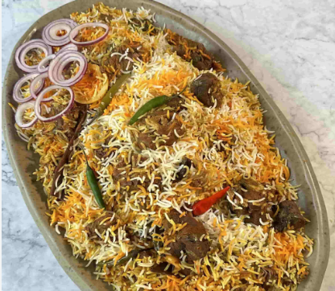

< Back to Home
Mutton Biryani

Description
This is an excellent homemade goat biryani recipe
Ingredients
- 1 ½ pounds goat meat
- 1 ¼ cups plain Greek yogurt, stirred
- 6 pitted prunes, or more to taste
- 3 ½ tablespoons diced fresh ginger
- 1 ¼ tablespoons garlic paste
- 1 ½ teaspoons salt, or to taste
- 1 ½ teaspoons ground cumin
- 1 ½ teaspoons ground black pepper
- 1 teaspoon turmeric powder
- ½ teaspoon ground red chile pepper
- ¼ teaspoon ground cinnamon
- ¼ teaspoon ground cloves
- 1 ¼ pounds basmati rice
- 1 ½ cups unsalted butter
- 6 onions, thinly sliced
- 4 ripe tomatoes, cut into ¼-inch cubes
- 4 potatoes, peeled and quartered
- 1 ½ cups cold water, or more as needed
- 12 cups water
- 3 tablespoons salt
- 1 tablespoon unsalted butter
- 4 bay leaves, or more to taste
Steps
-
Combine goat meat, yogurt, prunes, ginger, garlic paste, 1 ½ teaspoons
salt, cumin, black pepper, turmeric, ground chile pepper, cinnamon, and
cloves in a bowl. Cover the bowl with plastic wrap; marinate in the
refrigerator, 8 to 14 hours.
-
Rinse rice under lukewarm water 2 times, then place in a pot. Cover with
enough cold water to reach 1 ¼- to 1 ½- inches above rice; soak for 1
hour.
-
Melt 1 ½ cups butter in a large skillet over low heat. Add onions; cook
and stir until translucent and golden, about 10 minutes. Add tomatoes;
cook and stir until oil separates and rises to the surface, 5 to 10
minutes
-
Add goat meat mixture and potatoes to onion mixture; cook and stir until
meat is browned and cooked through, 20 to 30 minutes. Pour in 1 ½ cups
cold water (or enough to cover) goat meat mixture; cook until meat is
tender, 30 to 40 minutes. Increase heat to medium; cook, stirring
frequently, until oil separates from mixture, about 5 minutes. Decrease
heat to low and keep warm.
- Preheat the oven to 275 degrees F (135 degrees C).
-
Bring 12 cups water, 3 tablespoons salt, and 1 tablespoon butter to a
boil in a large pot for 3 to 4 minutes. Drain rice; add to boiling water
and cook for 10 minutes. Remove from heat; carefully drain water.
-
Spoon ½ rice into a large baking dish; top with ½ goat meat mixture.
Arrange 2 bay leaves on goat meat mixture. Repeat layering with
remaining ½ each rice, goat meat mixture, and bay leaves. Cover dish
with aluminum foil.
-
Bake in the preheated oven until rice is fully cooked, 30 to 40 minutes.